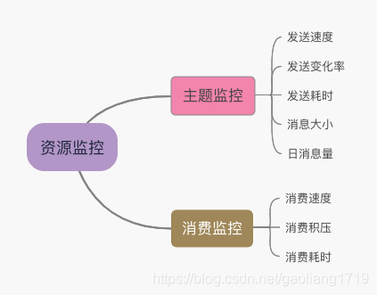

- 01 搭建学习环境准备篇.md.html
- 02 RocketMQ 核心概念扫盲篇.md.html
- 03 消息发送 API 详解与版本变迁说明.md.html
- 04 结合实际应用场景谈消息发送.md.html
- 05 消息发送核心参数与工作原理详解.md.html
- 06 消息发送常见错误与解决方案.md.html
- 07 事务消息使用及方案选型思考.md.html
- 08 消息消费 API 与版本变迁说明.md.html
- 09 DefaultMQPushConsumer 核心参数与工作原理.md.html
- 10 DefaultMQPushConsumer 使用示例与注意事项.md.html
- 11 DefaultLitePullConsumer 核心参数与实战.md.html
- 12 结合实际场景再聊 DefaultLitePullConsumer 的使用.md.html
- 13 结合实际场景顺序消费、消息过滤实战.md.html
- 14 消息消费积压问题排查实战.md.html
- 15 RocketMQ 常用命令实战.md.html
- 16 RocketMQ 集群性能摸高.md.html
- 17 RocketMQ 集群性能调优.md.html
- 18 RocketMQ 集群平滑运维.md.html
- 19 RocketMQ 集群监控（一）.md.html
- 20 RocketMQ 集群监控（二）.md.html
- 21 RocketMQ 集群告警.md.html
- 22 RocketMQ 集群踩坑记.md.html
- 23 消息轨迹、ACL 与多副本搭建.md.html
- 24 RocketMQ-Console 常用页面指标获取逻辑.md.html
- 25 RocketMQ Nameserver 背后的设计理念.md.html
- 26 Java 并发编程实战.md.html
- 27 从 RocketMQ 学基于文件的编程模式（一）.md.html
- 28 从 RocketMQ 学基于文件的编程模式（二）.md.html
- 29 从 RocketMQ 学 Netty 网络编程技巧.md.html
- 30 RocketMQ 学习方法之我见.md.html
- 捐赠
20 RocketMQ 集群监控（二）
前言
主题和消费组通常使用方比较关心的资源，发送方关注主题，消费方关注消费组。管理员更侧重关注集群的健康状况。本文介绍主题和消费组的监控实战，包括监控项的设计、及每个监控项的代码实现。
监控项设计
我们先把主题监控和消费监控统称为资源监控，下图分列了主题和消费组包含的监控项。

主题监控
从发送速度、发送耗时、消息大小、日消息量方面整理主题监控项，下面分别介绍这些监控项的重要性。
发送速度
通过实时采集主题的发送速度，来掌握主题的流量情况。例如：有些业务场景不允许主题的发送速度掉为 0，那通过实时采集发送速度指标，为将来告警做准备。
发送变化率
发送变化率是指，特定时间内主题的发送速度变化了多少。例如：5 分钟内发送速率陡增了 2 倍。通常用于两方面，一个是保护集群，某个 Topic 过高的瞬时流量可能对集群安全造成影响。例如：一个发送速率为 5000 的主题，在 3 分钟内陡增了 5 倍，到了 25000 的高度，这种流量对集群存在安全隐患。另一个是使用角度检测业务是否正常，比如一个发送速率为 8000 的主题，在 3 分钟内掉为 80，类似这种断崖式下跌是否是业务正常逻辑，可以对业务健康情况反向检测。
发送耗时
通过采集发送消息的耗时分布情况，了解客户端的发送情况，耗时分布可以为下面区间，单位毫秒。[0, 1), [1, 5), [5, 10), [10, 50), [50, 100), [100, 500), [500, 1000), [1000, ∞)。例如：如果发送的消息耗时分布集中在大于 500ms~1000ms，那需要介入分析原因为何耗时如此长。
消息大小
通过采集消息大小的分布情况，了解那些客户端存在大消息。发送速率过高的大消息同样存在集群的安全隐患。比如那些主题发送的消息大于 5K，为日后需要专项治理或者实时告警提供数据支撑。消息大小分布区间如下参考，单位 KB。[0, 1), [1, 5), [5, 10), [10, 50), [50, 100), [500, 1000), [1000, ∞)。
日消息量
日消息量是指通过每天采集的发送的消息数量，形成时间曲线。可以分析一周、一月的消息总量变化情况。
消费监控
消费速度
通过实时采集消费速度指标，掌握消费组健康情况。同样有些场景对消费速度大小比较关心。通过采集实时消息消费速率情况，为告警提供数据支撑。
消费积压
消费积压是指某一时刻还有多少消息没有消费，消费积压 = 发送消息总量 - 消费消息总量。消息积压是消费组监控指标中最重要的一项，有一些准实时场景对积压有着严苛的要求，那对消费积压指标的采集和告警就尤为重要。
消费耗时
消费耗时是从客户端采集的指标，通过采集客户端消费耗时分布情况检测客户端消费情况。通过消费耗时可以观察到客户端是否有阻塞情况、以及协助使用同学排查定位问题。
监控开发实战
在上面梳理的主题监控和消费监控的指标中，有些指标需要从 RocketMQ 集群采集，例如：发送速度、日消息量、消费速度、消费积压。有些指标需要客户端上报，例如：发送耗时、发送消息体大小、消费耗时。

实战部分说明
下面代码中用到的定时任务调度、getMqAdmin 等工具类见 《RocketMQ 集群监控（一）》，关于调度采集频率，可以选择 1 秒或者 5 秒均可。
上图中的“指标采集相关主题”，考虑到有的公司可能几千上万的应用，可以采用 Kafka 来做。
下面实战中主要关注 RocketMQ 相关指标如何收集，上报到 Kafka 的指标主题以及存储时序数据库代码没有给出，这部分逻辑一个是发送，一个插入数据库，并不复杂，自行完善即可。
实践中建议提供 SDK 来封装发送和消费，同时将监控指标的采集也封装进去，这样对用户来说是无感知的。
收集主题发送速度
先获取了集群中的主题列表，然后统计每个主题在每个 Master 中的速率。最后将统计的结果上报到统计主题或者直接写入时序数据库。
另外，统计时将 MQ 内置一些主题过滤掉无需统计。例如：重试队列（%RETRY%）、死信队列（%DLQ%）。
public void collectTopicTps() throws Exception {
DefaultMQAdminExt mqAdmin = getMqAdmin();
Set<String> topicList = mqAdmin.fetchTopicsByCLuster("demo_mq").getTopicList();
ClusterInfo clusterInfo = mqAdmin.examineBrokerClusterInfo();
Map<String/*主题名称*/, Double/*Tps*/> topicTps = Maps.newHashMap();
// 统计主题在每个 Master 上的速度
for (Map.Entry<String, BrokerData> stringBrokerDataEntry : clusterInfo.getBrokerAddrTable().entrySet()) {
BrokerData brokerData = stringBrokerDataEntry.getValue();
// 获取 Master 节点
String brokerAddr = brokerData.getBrokerAddrs().get(MixAll.MASTER_ID);
for (String topic : topicList) {
try {
//注意此处将%DLQ%、%RETRY%等 MQ 内置主题过滤掉
if(topic.contains("%DLQ%")|| topic.contains("%RETRY%")){
continue;
}
BrokerStatsData topicPutNums = mqAdmin.viewBrokerStatsData(brokerAddr, BrokerStatsManager.TOPIC_PUT_NUMS, topic);
double topicTpsOnBroker = topicPutNums.getStatsMinute().getTps();
if(topicTps.containsKey(topic)){
topicTps.put(topic, topicTps.get(topic) + topicTpsOnBroker);
}else{
topicTps.put(topic,topicTpsOnBroker);
}
} catch (MQClientException ex) {
ex.printStackTrace();
}
}
}
// 将采集到的主题速度，topicTps 上报到主题或者直接写入时序数据库即可
}
收集主题日消息量
日消息量的采集方式与主题发送速度的采集方式类似。由于是日消息量，采集频率可以一天执行一次。
public void collectTopicMsgNums() throws Exception {
DefaultMQAdminExt mqAdmin = getMqAdmin();
Set<String> topicList = mqAdmin.fetchTopicsByCLuster("demo_mq").getTopicList();
ClusterInfo clusterInfo = mqAdmin.examineBrokerClusterInfo();
Map<String/*主题名称*/, Long/*日消息量*/> topicMsgNum = Maps.newHashMap();
// 统计主题在每个 Master 上日消息量
for (Map.Entry<String, BrokerData> stringBrokerDataEntry : clusterInfo.getBrokerAddrTable().entrySet()) {
BrokerData brokerData = stringBrokerDataEntry.getValue();
// 获取 Master 节点
String brokerAddr = brokerData.getBrokerAddrs().get(MixAll.MASTER_ID);
for (String topic : topicList) {
try {
//注意此处将%DLQ%、%RETRY%等 MQ 内置主题过滤掉
if(topic.contains("%DLQ%")|| topic.contains("%RETRY%")){
continue;
}
BrokerStatsData topicPutNums = mqAdmin.viewBrokerStatsData(brokerAddr, BrokerStatsManager.TOPIC_PUT_NUMS, topic);
long topicMsgNumOnBroker = topicPutNums.getStatsDay().getSum();
if(topicMsgNum.containsKey(topic)){
topicMsgNum.put(topic, topicMsgNum.get(topic) + topicMsgNumOnBroker);
}else{
topicMsgNum.put(topic,topicMsgNumOnBroker);
}
} catch (MQClientException ex) {
// ex.printStackTrace();
}
}
}
// 将采集到的主题日消息量，topicMsgNum 上报到指标主题或者直接写入时序数据库即可
}
收集消费速度
下面代码循环集群中每个 Broker，汇总每个 Broker 中每个 messageQueue 的消费速度。代码 consumerTps 即包含了消费组与其对应的消费速度。
public void collectConsumerTps() throws Exception {
DefaultMQAdminExt mqAdmin = getMqAdmin();
ClusterInfo clusterInfo = mqAdmin.examineBrokerClusterInfo();
Map<String/*消费者名称*/, Double/*消费 Tps*/> consumerTps = Maps.newHashMap();
// 统计主题在每个 Master 上的消费速率
for (Map.Entry<String, BrokerData> stringBrokerDataEntry : clusterInfo.getBrokerAddrTable().entrySet()) {
BrokerData brokerData = stringBrokerDataEntry.getValue();
// 获取 Master 节点
String brokerAddr = brokerData.getBrokerAddrs().get(MixAll.MASTER_ID);
ConsumeStatsList consumeStatsList = mqAdmin.fetchConsumeStatsInBroker(brokerAddr, false, 5000);
for (Map<String, List<ConsumeStats>> consumerStats : consumeStatsList.getConsumeStatsList()) {
for (Map.Entry<String, List<ConsumeStats>> stringListEntry : consumerStats.entrySet()) {
String consumer = stringListEntry.getKey();
List<ConsumeStats> consumeStats = stringListEntry.getValue();
Double tps = 0d;
for (ConsumeStats consumeStat : consumeStats) {
tps += consumeStat.getConsumeTps();
}
if(consumerTps.containsKey(consumer)){
consumerTps.put(consumer, consumerTps.get(consumer) + tps);
}else{
consumerTps.put(consumer,tps);
}
}
}
}
// 将采集到的消费速率，consumerTps 上报到指标主题或者直接写入时序数据库即可
}
收集消费积压
消费组的积压统计，需要计算各个消费队列的积压，并将积压求和汇总。
public void collectConsumerLag() throws Exception {
DefaultMQAdminExt mqAdmin = getMqAdmin();
ClusterInfo clusterInfo = mqAdmin.examineBrokerClusterInfo();
Map<String/*消费者名称*/, Long/*消费积压*/> consumerLags = Maps.newHashMap();
// 统计主题在每个 Master 上的消费积压
for (Map.Entry<String, BrokerData> stringBrokerDataEntry : clusterInfo.getBrokerAddrTable().entrySet()) {
BrokerData brokerData = stringBrokerDataEntry.getValue();
// 获取 Master 节点
String brokerAddr = brokerData.getBrokerAddrs().get(MixAll.MASTER_ID);
ConsumeStatsList consumeStatsList = mqAdmin.fetchConsumeStatsInBroker(brokerAddr, false, 5000);
for (Map<String, List<ConsumeStats>> consumerStats : consumeStatsList.getConsumeStatsList()) {
for (Map.Entry<String, List<ConsumeStats>> stringListEntry : consumerStats.entrySet()) {
String consumer = stringListEntry.getKey();
List<ConsumeStats> consumeStats = stringListEntry.getValue();
Long lag = 0L;
for (ConsumeStats consumeStat : consumeStats) {
lag += computeTotalDiff(consumeStat.getOffsetTable());
}
if(consumerLags.containsKey(consumer)){
consumerLags.put(consumer, consumerLags.get(consumer) + lag);
}else{
consumerLags.put(consumer,lag);
}
}
}
}
// 将采集到的消费积压，consumerLags 上报到指标主题或者直接写入时序数据库即可
}
public long computeTotalDiff(HashMap<MessageQueue, OffsetWrapper> offsetTable) {
long diffTotal = 0L;
long diff = 0l;
for(Iterator it = offsetTable.entrySet().iterator(); it.hasNext(); diffTotal += diff) {
Map.Entry<MessageQueue, OffsetWrapper> next = (Map.Entry)it.next();
long consumerOffset = next.getValue().getConsumerOffset();
if(consumerOffset > 0){
diff = ((OffsetWrapper)next.getValue()).getBrokerOffset() - consumerOffset;
}
}
return diffTotal;
}
收集发送耗时及消息大小
DistributionMetric 提供了两个方法，分别用于统计消息大小和发送耗时。耗时分布区间为：[0, 1), [1, 5), [5, 10), [10, 50), [50, 100), [100, 500), [500, 1000), [1000, ∞)，单位毫秒。消息大小分布区为：[0, 1), [1, 5), [5, 10), [10, 50), [50, 100), [500, 1000), [1000, ∞)，单位 KB。
public class DistributionMetric {
private String name;
private LongAdder lessThan1Ms = new LongAdder();
private LongAdder lessThan5Ms = new LongAdder();
private LongAdder lessThan10Ms = new LongAdder();
private LongAdder lessThan50Ms = new LongAdder();
private LongAdder lessThan100Ms = new LongAdder();
private LongAdder lessThan500Ms = new LongAdder();
private LongAdder lessThan1000Ms = new LongAdder();
private LongAdder moreThan1000Ms = new LongAdder();
private LongAdder lessThan1KB = new LongAdder();
private LongAdder lessThan5KB = new LongAdder();
private LongAdder lessThan10KB = new LongAdder();
private LongAdder lessThan50KB = new LongAdder();
private LongAdder lessThan100KB = new LongAdder();
private LongAdder lessThan500KB = new LongAdder();
private LongAdder lessThan1000KB = new LongAdder();
private LongAdder moreThan1000KB = new LongAdder();
public static DistributionMetric newDistributionMetric(String name) {
DistributionMetric distributionMetric = new DistributionMetric();
distributionMetric.setName(name);
return distributionMetric;
}
public void markTime(long costInMs) {
if (costInMs < 1) {
lessThan1Ms.increment();
} else if (costInMs < 5) {
lessThan5Ms.increment();
} else if (costInMs < 10) {
lessThan10Ms.increment();
} else if (costInMs < 50) {
lessThan50Ms.increment();
} else if (costInMs < 100) {
lessThan100Ms.increment();
} else if (costInMs < 500) {
lessThan500Ms.increment();
} else if (costInMs < 1000) {
lessThan1000Ms.increment();
} else {
moreThan1000Ms.increment();
}
}
public void markSize(long costInMs) {
if (costInMs < 1024) {
lessThan1KB.increment();
} else if (costInMs < 5 * 1024) {
lessThan5KB.increment();
} else if (costInMs < 10 * 1024) {
lessThan10KB.increment();
} else if (costInMs < 50 * 1024) {
lessThan50KB.increment();
} else if (costInMs < 100 * 1024) {
lessThan100KB.increment();
} else if (costInMs < 500 * 1024) {
lessThan500KB.increment();
} else if (costInMs < 1024 * 1024) {
lessThan1000KB.increment();
} else {
moreThan1000KB.increment();
}
}
public String getName() {
return name;
}
public void setName(String name) {
this.name = name;
}
}
public class MetricInfo {
private String name;
private long lessThan1Ms;
private long lessThan5Ms;
private long lessThan10Ms;
private long lessThan50Ms;
private long lessThan100Ms;
private long lessThan500Ms;
private long lessThan1000Ms;
private long moreThan1000Ms;
private long lessThan1KB;
private long lessThan5KB;
private long lessThan10KB;
private long lessThan50KB;
private long lessThan100KB;
private long lessThan500KB;
private long lessThan1000KB;
private long moreThan1000KB;
public String getName() {
return name;
}
public void setName(String name) {
this.name = name;
}
public long getLessThan1Ms() {
return lessThan1Ms;
}
public void setLessThan1Ms(long lessThan1Ms) {
this.lessThan1Ms = lessThan1Ms;
}
public long getLessThan5Ms() {
return lessThan5Ms;
}
public void setLessThan5Ms(long lessThan5Ms) {
this.lessThan5Ms = lessThan5Ms;
}
public long getLessThan10Ms() {
return lessThan10Ms;
}
public void setLessThan10Ms(long lessThan10Ms) {
this.lessThan10Ms = lessThan10Ms;
}
public long getLessThan50Ms() {
return lessThan50Ms;
}
public void setLessThan50Ms(long lessThan50Ms) {
this.lessThan50Ms = lessThan50Ms;
}
public long getLessThan100Ms() {
return lessThan100Ms;
}
public void setLessThan100Ms(long lessThan100Ms) {
this.lessThan100Ms = lessThan100Ms;
}
public long getLessThan500Ms() {
return lessThan500Ms;
}
public void setLessThan500Ms(long lessThan500Ms) {
this.lessThan500Ms = lessThan500Ms;
}
public long getLessThan1000Ms() {
return lessThan1000Ms;
}
public void setLessThan1000Ms(long lessThan1000Ms) {
this.lessThan1000Ms = lessThan1000Ms;
}
public long getMoreThan1000Ms() {
return moreThan1000Ms;
}
public void setMoreThan1000Ms(long moreThan1000Ms) {
this.moreThan1000Ms = moreThan1000Ms;
}
public long getLessThan1KB() {
return lessThan1KB;
}
public void setLessThan1KB(long lessThan1KB) {
this.lessThan1KB = lessThan1KB;
}
public long getLessThan5KB() {
return lessThan5KB;
}
public void setLessThan5KB(long lessThan5KB) {
this.lessThan5KB = lessThan5KB;
}
public long getLessThan10KB() {
return lessThan10KB;
}
public void setLessThan10KB(long lessThan10KB) {
this.lessThan10KB = lessThan10KB;
}
public long getLessThan50KB() {
return lessThan50KB;
}
public void setLessThan50KB(long lessThan50KB) {
this.lessThan50KB = lessThan50KB;
}
public long getLessThan100KB() {
return lessThan100KB;
}
public void setLessThan100KB(long lessThan100KB) {
this.lessThan100KB = lessThan100KB;
}
public long getLessThan500KB() {
return lessThan500KB;
}
public void setLessThan500KB(long lessThan500KB) {
this.lessThan500KB = lessThan500KB;
}
public long getLessThan1000KB() {
return lessThan1000KB;
}
public void setLessThan1000KB(long lessThan1000KB) {
this.lessThan1000KB = lessThan1000KB;
}
public long getMoreThan1000KB() {
return moreThan1000KB;
}
public void setMoreThan1000KB(long moreThan1000KB) {
this.moreThan1000KB = moreThan1000KB;
}
}
ClientMetricCollect 类模拟发送时对消息发送的耗时与消息大小统计。通过定时任务调度 recordMetricInfo() 方法，将采集到数据上报到特定主题并存入时序数据库。即完成了发送耗时及消息大小的采集。
public class ClientMetricCollect {
public Map<String, DefaultMQProducer> producerMap = Maps.newHashMap();
private DistributionMetric distributionMetric;
public DefaultMQProducer getTopicProducer(String topic) throws MQClientException {
if (!producerMap.containsKey(topic)){
DefaultMQProducer producer = new DefaultMQProducer("ProducerGroup".concat("_").concat(topic));
producer.setNamesrvAddr("dev-mq3.ttbike.com.cn:9876");
producer.setVipChannelEnabled(false);
producer.setClientIP("mq producer-client-id-1");
try {
producer.start();
this.distributionMetric = DistributionMetric.newDistributionMetric(topic);
producerMap.put(topic,producer);
} catch (MQClientException e) {
throw e;
}
}
return producerMap.get(topic);
}
public void send( Message message) throws Exception {
long begin = System.currentTimeMillis();
SendResult sendResult = null;
sendResult = getTopicProducer(message.getTopic()).send(message);
SendStatus sendStatus = sendResult.getSendStatus();
if (sendStatus.equals(SendStatus.SEND_OK)) {
long duration = System.currentTimeMillis() - begin;
distributionMetric.markTime(duration);
distributionMetric.markSize(message.getBody().length);
}
}
public void recordMetricInfo(){
MetricInfo metricInfo = new MetricInfo();
metricInfo.setName(distributionMetric.getName());
metricInfo.setLessThan1Ms(distributionMetric.getLessThan1Ms().longValue());
metricInfo.setLessThan5Ms(distributionMetric.getLessThan5Ms().longValue());
metricInfo.setLessThan10Ms(distributionMetric.getLessThan10Ms().longValue());
metricInfo.setLessThan50Ms(distributionMetric.getLessThan50Ms().longValue());
metricInfo.setLessThan100Ms(distributionMetric.getLessThan100Ms().longValue());
metricInfo.setLessThan500Ms(distributionMetric.getLessThan500Ms().longValue());
metricInfo.setLessThan1000Ms(distributionMetric.getLessThan1000Ms().longValue());
metricInfo.setMoreThan1000Ms(distributionMetric.getMoreThan1000Ms().longValue());
metricInfo.setLessThan1KB(distributionMetric.getLessThan1KB().longValue());
metricInfo.setLessThan5KB(distributionMetric.getLessThan5KB().longValue());
metricInfo.setLessThan10KB(distributionMetric.getLessThan10KB().longValue());
metricInfo.setLessThan50KB(distributionMetric.getLessThan50KB().longValue());
metricInfo.setLessThan100KB(distributionMetric.getLessThan100KB().longValue());
metricInfo.setLessThan500KB(distributionMetric.getLessThan500KB().longValue());
metricInfo.setLessThan1000KB(distributionMetric.getLessThan1000KB().longValue());
metricInfo.setMoreThan1000KB(distributionMetric.getMoreThan1000KB().longValue());
// 将采集到的发送耗时与消息大小分布，metricInfo 上报到主题或者直接写入时序数据库即可
// System.out.println(JSON.toJSONString(metricInfo));
}
@Test
public void test() throws Exception {
for(int i=0; i<100; i++){
byte[] TEST_MSG = "helloworld".getBytes();
Message message = new Message("melon_online_test", TEST_MSG);
send(message);
}
}
}
上报消费耗时
接着使用上面的公共类 DistributionMetric 的 markTime 来记录耗时情况，可以度量业务处理消息的耗时分布。耗时分布区间为：[0, 1), [1, 5), [5, 10), [10, 50), [50, 100), [100, 500), [500, 1000), [1000, ∞)，单位毫秒。
public class ConsumerMetric {
private DistributionMetric distributionMetric;
public static void main(String[] args) throws Exception {
String consumerName = "demo_consumer";
ConsumerMetric consumerMetric = new ConsumerMetric();
consumerMetric.startConsume(consumerName);
}
public void startConsume(String consumerName) throws Exception{
this.distributionMetric = DistributionMetric.newDistributionMetric(consumerName);
DefaultMQPushConsumer consumer = new DefaultMQPushConsumer(consumerName);
consumer.setNamesrvAddr("dev-mq3.ttbike.com.cn:9876");
consumer.subscribe("melon_online_test", "*");
consumer.setConsumeFromWhere(ConsumeFromWhere.CONSUME_FROM_FIRST_OFFSET);
//wrong time format 2017_0422_221800
consumer.setConsumeTimestamp("20181109221800");
consumer.registerMessageListener(new MessageListenerConcurrently() {
@Override
public ConsumeConcurrentlyStatus consumeMessage(List<MessageExt> msgs, ConsumeConcurrentlyContext context) {
long begin = System.currentTimeMillis();
// 处理业务逻辑
System.out.printf("%s Receive New Messages: %s %n", Thread.currentThread().getName(), msgs);
// 统计业务逻辑的消费耗时情况
distributionMetric.markTime(System.currentTimeMillis() - begin);
return ConsumeConcurrentlyStatus.CONSUME_SUCCESS;
}
});
consumer.start();
System.out.printf("Consumer Started.%n");
}
public void recordMetricInfo(){
MetricInfo metricInfo = new MetricInfo();
metricInfo.setName(distributionMetric.getName());
metricInfo.setLessThan1Ms(distributionMetric.getLessThan1Ms().longValue());
metricInfo.setLessThan5Ms(distributionMetric.getLessThan5Ms().longValue());
metricInfo.setLessThan10Ms(distributionMetric.getLessThan10Ms().longValue());
metricInfo.setLessThan50Ms(distributionMetric.getLessThan50Ms().longValue());
metricInfo.setLessThan100Ms(distributionMetric.getLessThan100Ms().longValue());
metricInfo.setLessThan500Ms(distributionMetric.getLessThan500Ms().longValue());
metricInfo.setLessThan1000Ms(distributionMetric.getLessThan1000Ms().longValue());
metricInfo.setMoreThan1000Ms(distributionMetric.getMoreThan1000Ms().longValue());
// 将采集到的发送耗时与消息大小分布，metricInfo 上报到主题或者直接写入时序数据库即可
// System.out.println(JSON.toJSONString(metricInfo));
}
}
发送变化率计算
发送变化率的计算依托时序数据库的函数，发送 Tps 变化率 =(最大值 - 最小值)/中位数。下图示例中，5 分钟的 TPS 变化率为 3%。可以定时调度计算该指标，超过阈值（例如：100%）可以发送告警信息。
> select SPREAD(value)/MEDIAN(value) from mq_topic_info where clusterName='demo_mq' and topicName='max_bonus_send_topic' and "name"='tps' and "time" > now()-5m ;
name: mq_topic_info
time spread_median
---- -------------
1598796048448226482 0.03338460146566541
© 2019 - 2023 Liangliang Lee. Powered by gin and hexo-theme-book.